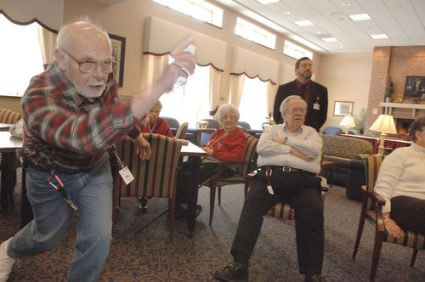
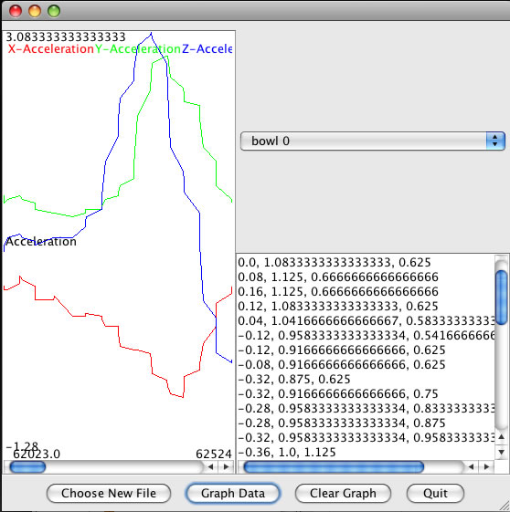
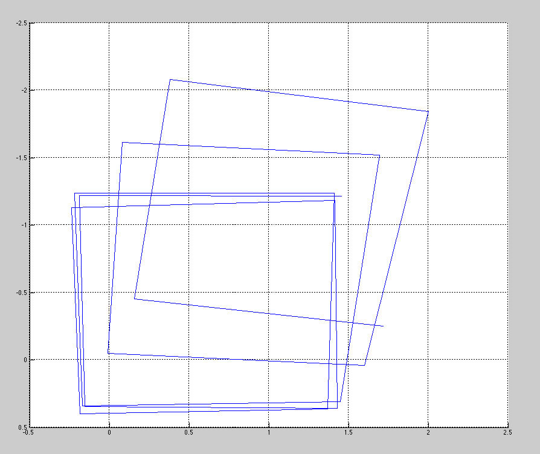

Using the Nintendo Wii to Assess Motility in the Elderly
Honors Thesis
Becca Groveman '09
Faculty Advisor: Professor Barbara Lerner

Image from Daily Tech online magazine
Abstract
Motility analysis is an important issue, especially in eldercare. Due to health care costs and a shortage of healthcare providers, institutional support for the growing number of elders in society will be impossible. An alternative to institutional support is in technology to assist in aging in place. There are many high-end systems available to assess motility. Though these systems help elders to stay independent for longer, they are expensive and require specialized equipment. My project explores the viability of using the Nintendo Wii as an inexpensive alternative. The high-end systems available can collect data with a greater accuracy than the Wiimote can, and can collect more data -- while the Wiimote can track up to four IR points simultaneously, a commercial system can track many more, and can visualize the data with greater sophistication. However, the Wii is inexpensive, intuitive, and accepted by the elderly population. While it cannot compete with high-end systems, it may be an acceptable substitute to allow for more frequent motility analysis. My project will determine whether it can be used to gather data with sufficient accuracy to be useful.
Experimental Setup
- Use 3 Wiimotes total:
- 1 Wiimote for 'normal' Wii usage that will generate accelerometer data
- 2 Wiimotes mounted securely with overlapping viewpoints for stereo vision analysis
- Use the IR cameras on the 2 additional Wiimotes to track 4 points on the user's body
- 4 points will be on each shoulder and hip, to allow the program to detect rotation from shoulders to hips, and to determine position relative to each other.
- Relating the data streams generated by the 2 stationary Wiimotes with the data stream generated from the Wiimote in use
- In the diagram below, it can be seen that the two Wiimotes next to the television are “watching' the user play the Wii using the Wiimote in hand
- The overlapping fields of view of the two 'watching' Wiimotes allows the user's location to be determined
Discussion

- Wiigee is a system for gesture recognition using the Nintendo Wiimote
- The screenshot above represents a program I wrote to graph the acceleration data from the Wiimote and the gesture data from Wiigee
- In the graph above, each of the three colored lines represent acceleration data on one axis, X, Y, and Z.
- The graph represents the accelerometer data generated during a single bowling motion
- A sample of the accelerometer data can be seen to the right of the graph

- My project uses the MATLAB Camera Calibration Toolbox to accomplish stereo triangulation for the two camera Wiimotes
- In the picture above, camera calibration has already occured
- The image represents a head-on view of the calibration square, in 3D space as calculated by MATLAB
- The square was seen by the watching Wiimotes during the same bowling motion as visualized above.
More Information
This project was awarded "Project most likely to have a positive impact on society" at the New England Undergraduate Computing Symposium (NEUCS'09).
The full text of my thesis is available here.
Documentation on using the software is available here.